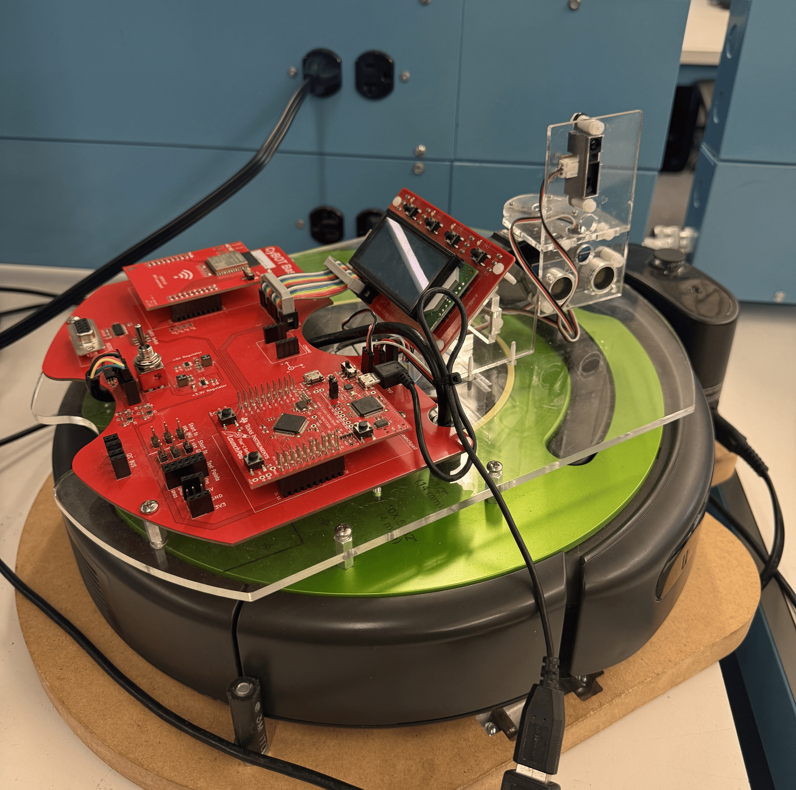
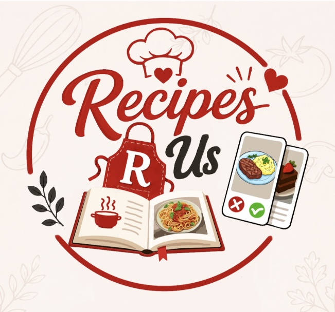
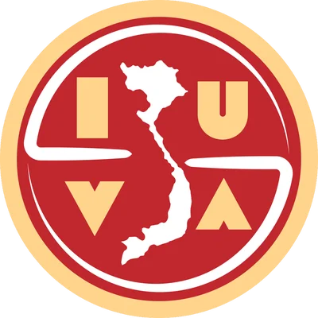

Profile
I am a software engineer with a strong interest in full-stack development and a willingness to explore various areas of software engineering. I'm eager to gain hands-on experience in the tech industry and discover where my passions truly lie, whether in web development, AI, or cloud technologies. I enjoy pushing myself to learn new tools and continuously grow both personally and professionally.
Education
Iowa State University - Ames, Iowa
B.S in Software Engineering
Western Iowa Tech Community College - Sioux City, Iowa
Dual-enrollment earning 22 credits
GPA: 4.00
Experience
Iowa State University
Incoming SE Peer Mentor
Aug 2026 - May 2027 | Ames, IA
- Provide guidance on coursework, campus resources, student success strategies, and opportunities.
- Build meaningful connections with mentees, ensuring they have the support needed to succeed.
Wells Enterprises
IT Intern
May 2026 - Present | Le Mars, IA
Hy-Vee
Pay Station Clerk
Jun 2025 - Aug 2025 | Sioux City, IA
- Operated Aloha POS system to accurately and efficiently handle transactions for breakfast and lunch orders.
- Exhibited versatility and responsiveness by quickly assisting cross-department teams during high-demand periods.
- Provided excellent customer service while maintaining a clean and safe environment for both staff and customers.
- Mointered and replished supplies such as cups, condiments, and utensils in both dining area and register station to ensure smooth service.
Skills: Team Communication • Adaptability • Active Listening
Babysitter
Self-Employed
Mar 2020 - Aug 2020 | Sioux City, IA
- Actively monitor children safety and well-being at all times
- Ensure chilrden received meals and engaging play activities that were both fun and educational
- Reamined patient and calemy de-escalated situation when children became restless, upset, and hungry
- Adapted to challenges in a rapidly changing enviromnet during COVID-19 pandemic
Skills: Creativity • Patience • Childcare & Safety • Conflict Resolution
Projects

Cy-Serve Delivery Robot
CPRE 2880 - Embedded System I
Worked in a team of five to develop a food-delivery robot using a Roomba platform and a Tiva TM4C123 microcontroller. Implemented a manual control system in C that translated keyboard inputs from a PC-based GUI into real-time motor commands for robot movement.
Integrated and calibrated IR and PING sensors to measure object distance and width. Sensor data was transmitted back to the GUI via UART, providing live feedback for navigation and obstacle awareness within a makeshift lab environment defined by the teaching assistant.
Collaborated with teammates to debug compilation and hardware integration issues, and successfully navigated the robot to three designated table locations during the demonstration.

RecipeRUs
SE 3090 - Software Development Practices
Collaborated in a team of 4 to develop a mobile recipe application that allows users to discover recipes through a swipe-based interface similar to Tinder. Users can search recipes, like or dislike dishes, and save favorites to a personalized cookbook.
Built using Java in Android Studio and IntelliJ IDEA with a MySQL-backed API to manage recipe data and user interactions. Integrated frontend and backend communication through RESTful endpoints.
Applied Agile software development practices including sprint planning, Git collaboration, CI/CD concepts, API testing, and weekly team meetings with TAs to track progress and future features.
Tech Stack: Java, Android Studio, IntelliJ IDEA, REST APIs, Git
View DemoInvolvement

Event Manager - Vietnamese Student Association (VSA)
Aug 2025 - May 2026 | Ames, IA
- Collaborate with board members to organize General Body Meetings (GBMs) and cultural events.
- Communicate with fellow board members during Executive Board Meetings (EBMs) to coordinate activities and responsibilities.
- Foster a welcoming and inclusive community by building meaningful connections with members.
- Strengthened communication and teamwork skills through active participation in planning and execution of events.
Concession Stand Volunteer - North High School
Sep 2022 | Sioux City, IA
- Volunteered at a large community event, serving food quickly to a high volume of customers with a positive attitude.
- Managed food preparation and restocking to ensure readiness during peak times.
- Collaborated with volunteers in a fast-paced setting, strengthening communication and problem-solving skills.
- Developed the ability to perform under pressure while maintaining customer satisfaction and teamwork.
Relevant Coursework
Qualifications
Languages Java, Javascript, C, HTML/CSS, SQL
Frameworks & Libraries: React.js, Node.js, Bootstrap
Tools and Technologies: Git/Github, Android Studio, Intellj IDEA, MySQL, VS Code